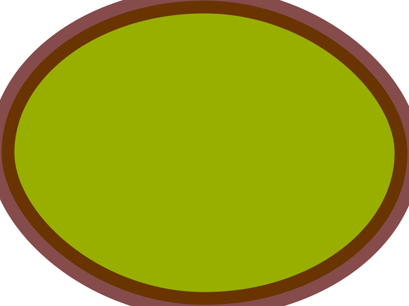

SVG Original

SVG modificado

Lo que he cambiado en el svg modificado respecto al original ha sido:
- stroke="#000" -> stroke="#500"
- rx="50" -> rx="400"
- stroke-opacity="null" -> stroke-opacity="0.7"
- stroke-width="1.5" -> stroke-width="50"
- fill="#00bf00" -> fill="#99af00"
SVG Original

SVG Modificado

Lo que he cambiado en el svg modificado respecto al original ha sido:
- stroke="#000" -> stroke="#900"
- transform="rotate(21.858219146728516 407.46710205078114,301.04626464843744) " -> transform="rotate(90.0 407.46710205078114,301.04626464843744) "
- height="5.45454" -> height="100.45454"
- stroke-width="1.5" -> stroke-width="15"
- fill="#005fbf" -> fill="#b8860b"
SVG Original

SVG Modificado

Lo que he cambiado en el svg modificado respecto al original ha sido:
- stroke-width="1.5" -> stroke-width="5"
- fill="none" -> fill="#ffd700"